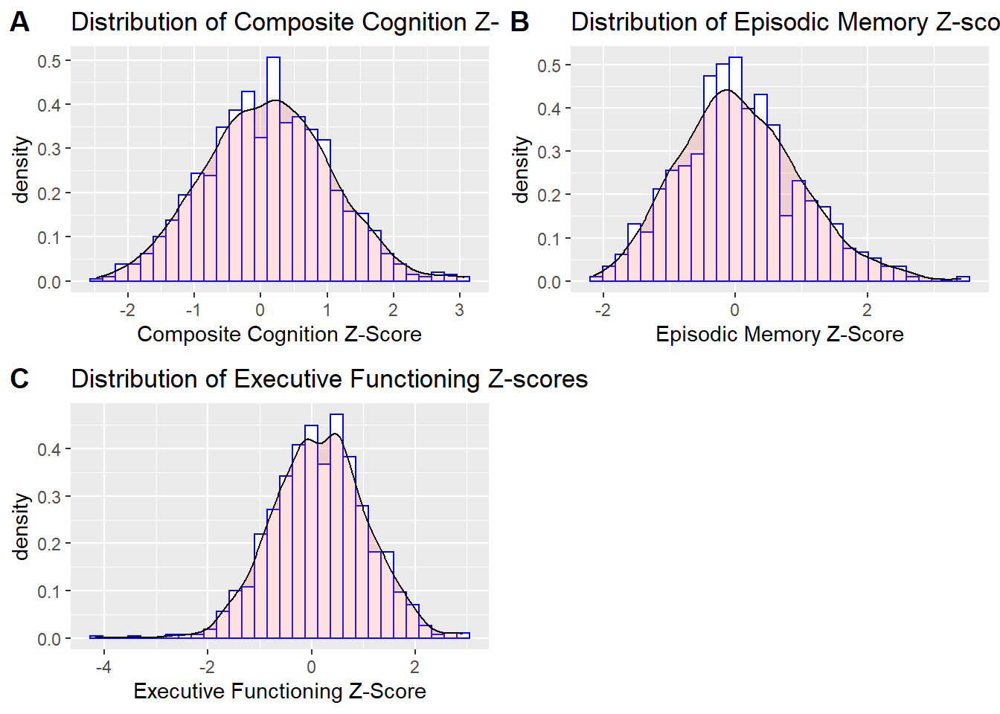

Dr. Michael Mangold is a clinician whose research interests focus on the impact of childhood trauma on various health outcomes. His current research investigates the effect of trauma in childhood on later life cognition and variables that attenuate this relationship. In prior research, he was able to show an association between substance misuse and early childhood trauma when investigating the distal outcome of parasympathetic activity. In his current project, he hypothesizes that substance abuse has an influence on the link between childhood trauma and mid- to late-life cognition. I was recruited for this project to be the primary biostatistician, in which I designed an analysis plan, conducted analyses in R, and drew statistical conclusions. After completing analysis, I worked with Dr. Mangold to analyze the statistical outcomes and draw clinically relevant conclusions from the data.
There is a significant and growing body of literature that investigates the association between childhood trauma and adulthood cognition.Prior research indicates that those with high exposures to childhood trauma had poorer cognitive performance as adults compared to those who had low exposure to trauma.1 The neurobiological mechanisms hypothesized to explain the possible association to poorer cognitive performance are decreased neuroplasticity, epigenetic modification of stress-related pathways, and the activation of the HPA axis.1 Disorders tied with exposure to trauma in childhood include but are not limited to major depressive disorder, bipolar disorder, anxiety, post-traumatic stress disorder, and among others.2-3 Many of these mental health disorders are linked to profound cognitive impairment.3 However, literature review also revealed poorer cognitive performance not only among adults who developed mental health disorders, but healthy adults who experienced trauma in childhood as well.3 The association was further evaluated by types of cognition – memory and executive functioning – and there continued to be significant results indicating cognitive decline.3 Despite the currently available literature on the link between childhood trauma and adulthood cognition, results are inconclusive as to whether there is strong statistical association.1 More longitudinal analyses must be done to establish this association. Additionally, a significant gap in current literature is evaluating factors that affect the magnitude of the possible association between trauma and later life cognition – specifically substance abuse. Substance abuse is a significant comorbidity to childhood trauma with the magnitudes of association to trauma differing based on type of substance.4 We also see profound cognitive impairment among those who frequently use illicit substances. Thus, the purpose of the study is to investigate whether substance use has a moderating effect on the association between childhood trauma and later life cognition. We will conduct a retrospective cohort study to investigate this clinical question.
The study population is adults from the Midlife in United States (MIDUS) study. MIDUS is an ongoing national, longitudinal study that looks at how different health factors (social, behavioral, psychological, biological, and neurological) come together to impact the health of age from early adulthood into midlife into old-age among continental US residents from ages 25 to 74.5 Data collection has occurred in three waves thus far– MIDUS I(1995), MIDUS II (2004)and MIDUS III(2013). The sample population for this study is from MIDUS II, respondents aged 35 to 86. Midus II includes a nine year follow up from the MIDUS I cohort, conducted from 2004 to 2006. Moreover, it includes a sample from Milwaukee, Wisconsin of primarily African American adults as part of the Milwaukee Project. Data collection for this cohort included survey assessments via phone interviews and questionnaires, along with additional questions in specific areas such as cognition.5 Data from the MIDUS study was retrieved from an online database published by the National Archive of Computerized Data on Aging.5 Inclusion criteria for this study was participants who had complete data on cognition and childhood trauma scores. There were a total of 1101 participants included in the study.
The primary outcome of interest is cognitive performance. Cognitive performance was evaluated at three levels in this study – composite cognition, episodic memory, and executive functioning z-scores. Each of the three levels of cognition were measured via BTACT, otherwise known as the Brief Test of Adult Cognition by Telephone.6 As stated in the name of the tool, seven tests are administered to individuals by live interviewers via telephone. 6 These tests can be used to measure two intercorrelated factors: episodic memory and executive functioning.6 Composite cognition is measured via the performance on all the tests. In the MIDUS dataset, these performance scores were reported via z scores. The z-scores are computed based on the mean and standard deviation of the MIDUS II sample for each of the 5 major tests. The z-scores were then averaged to create z-scores for each of the levels of cognition. Initial data exploration revealed a normal distribution for composite cognition z scores (Shapiro Wilk-statistic: 0.998, p-value=0.309) and non-normal distributions for episodic memory (Shapiro Wilk-statistic: 0.989, p-value<0.001) and executive functioning z scores (Shapiro Wilk-statistic: 0.996, p-value<0.0001). The results for the Shapiro-Wilks tests were confirmed by plotting density plots of the distribution of z scores as seen in figure 1.
## Don't know how to automatically pick scale for object of type haven_labelled/vctrs_vctr/double. Defaulting to continuous.## `stat_bin()` using `bins = 30`. Pick better value with `binwidth`.## Don't know how to automatically pick scale for object of type haven_labelled/vctrs_vctr/double. Defaulting to continuous.## `stat_bin()` using `bins = 30`. Pick better value with `binwidth`.## Don't know how to automatically pick scale for object of type haven_labelled/vctrs_vctr/double. Defaulting to continuous.## `stat_bin()` using `bins = 30`. Pick better value with `binwidth`.
The primary predictor is childhood trauma, measured using the Childhood Trauma questionnaire (CTQ). The questionnaire is a retrospective recall-based measure used to determine childhood trauma experiences.7 The questionnaire has 6 subscales of physical abuse, sexual abuse, emotional abuse, emotional neglect, physical neglect, and minimization/denial.7 Responses are measured on a 5-point Likert scale from “never true” to “very often true”.7 Total scores for each section range from 5 to 25 points, except for minimization and denial which includes three questions ranging from 3 to 15 points. In this study, we will further aggregate the subscales into two groups: threat and deprivation. Threat is the sum of physical, sexual and emotional abuse scores, while deprivation is sum of physical, emotional neglect, and minimization/denial scores.
Substance use was measured as a binary, categorical variable. Study participants at the time of the interview were asked whether they self-administered substances over the past 12 months. The group of substances include tranquilizers, stimulants, painkillers, depressants, marijuana, cocaine, hallucinogens, inhalants and heroin. Table 1 shows us the number of participants who answered yes or no as to having used each of the substances. From table 1, we see that the number of participants who indicated use of substances is quite low. Substance miduse was aggregated and computed via the data created into a binary categorical variable that indicates whether an individual had used any substance over the past 12 months. Calculations showed that in total 104 participants (9.4% of sample) indicated use of a substance.
The association between childhood trauma and adult cognition is confounded by a multitude of factors. In this study the following covariates were adjusted for: race, sex, age and highest level of education completed. Race and sex were considered confounders based on literature review and confirmation via statistical criterion. The high association of age and education to cognition warranted adjustment.
To analyze whether substance use has a moderating effect on the association between childhood trauma and later life cognition, we used regression analysis for our primary analysis. The purpose of the regression analysis is to test for significance of interaction effects between substance use and childhood trauma questionnaire scores. We will run analyses for both total substance use and substance use broken down by group. For the purposes of interpretability and model building, we will exclude marijuana and heroin as parameters for the model given the small cell size – as seen in table 1. We will utilize mixed effects models with family ID as our random effect. The assumption of independence is violated for this sample as investigators used cluster sampling, therefore observations are likely correlated if they come from the same family. Therefore, mixed effect models were deemed appropriate. For composite cognition, we will use linear mixed effects models as the distribution of z scores is normal (see figure 1). Whereas, generalized linear mixed effects models will be used for model analysis for episodic memory and executive functioning z score since the distributions for both are non-normal. To begin, an unadjusted analysis was conducted to investigate the unadjusted association between childhood trauma scores (deprivation and threat) and each respective type of cognition. Then a model adjusted for the covariates of substance use (total vs by group), race, sex, age, and education will be fitted. To evaluate the significance of parameters in the model, we will first look at parameter estimates to see if they are greater than ± 0.3. This value was chosen as previous studies deemed the difference of a 0.3 cognition z-score to be clinically significant and relevant.6 Then we will look at the confidence interval and p-values from t-tests to evaluate whether individual slope parameters are statistically significant. If the null value of 0 is included in the confidence interval or the p-value is above the 5% significance level, we will conclude the parameter is not statistically significant. The same process for evaluating significance of parameters will be applied to the model with interactions between childhood trauma scores and substance use. In this model, we are mainly looking to see if there were changes in parameter estimates for CTQ scores and if the interaction terms are significant. The final step to evaluate significance of interaction effects is to compare the model with interaction effects to the model adjusted for covariates through a Likelihood Ratio Test and comparison of AIC and BIC. Assumptions of constant variance were checked through fitted residual plots for all models built.
A linear mixed effects model was fitted with fixed effects of threat (β=0.004, 95% CI:(-0.005,0.014)) and deprivation (β= -0.013, 95% CI: (-0.026, 0.005)) and random effects of family. From testing the significance of the parameters, we would conclude that both predictors are insignificant at the 5% significance level for this model. The 95% confidence intervals of the parameter confirm the results of the statistical tests of significance for the parameters since 0 is included in the interval. Despite insignificant fixed effects, we would conclude that random effects due to family are significant as the differences between families explains 53.8% of the variance not explained by the fixed effects.
The models adjusted for covariates did not yield statistically significant results regarding significance of parameter estimates for individual substance groups nor total substance use. However, the models do show us the importance of doing subgroup analysis when looking at substance use. Furthermore, the confounders and covariates adjusted for were in the most part significant as illustrated in the effects plot and parameter estimates table in figure 2 above. We drew similar statistical conclusions from the interactions model as well. None of the interaction terms were significant as confidence intervals included 0, p-values greater than 0.05, and the parameter estimates were within ±0.3. We then compared adjusted model to the model with interaction terms of substance use with CTQ scores via the Likelihood Ratio test. From the test we found that the interactions model was not significantly different (χ^2=0.1783, p-value = 0.9147). Moreover, the interactions model was higher in both AIC and BIC. Thus, we conclude the interaction effects of drug use (by subgroup) and childhood trauma is not significant. Regression analysis for total substance use yielded similar results. When comparing the model fit of the adjusted model to the adjusted model with interaction terms, there were not significant differences in marginal or conditional r^2.
Unadjusted analysis showed that threat (β=0.006, 95% CI:(-0.002,0.015)) and deprivation (β= -0.007, 95% CI: (-0.019, 0.006)) were not significant predictors for episodic memory at the 5% significance level. Moreover, random effects due to family were not as significant in this model as the differences due to family only explained 27.8% of variation not explained by the fixed effects. After adjusting for covariates, model fit slightly improved with increases in marginal and conditional r2, but the slope parameters for threat and deprivation continued to have low, insignificant values. Both evaluation of interaction parameters and model comparison confirmed interaction effects between aggregated substance and childhood trauma were not significant. Similar analyses was conducted, but with substance use broken down into substance group categories – we found different results! Though the individual interaction parameters were not significant, the interactions model was found to be significantly better than the adjusted covariates model without interactions at the 5% significance level(X^2=125.27,p-value<0.0001). Table 2 shows the model comparison statistics. From the model comparisons we see that AIC, BIC, and deviance are lower for the interactions model. This indicates better model fit. Despite the conclusions drawn from the model comparisons, we cannot definitively conclude interaction effects are significant, but there is a possibility of interaction effects.
The unadjusted model showed that childhood deprivation (β= - 0.014, 95% CI:(-0.025,-0.0017), p-value=0.0248) is a significant predictor for executive functioning at the 5% significance level. We would interpret this slope parameter as for every one-point increase in deprivation, on average, executive functioning z score decreases by 0.014. Since 0 is not in the 95% confidence interval, this parameter is significant. Furthermore the marginal r^2 value associated with the fixed effects is significantly low, but the conditional r2 is much higher indicating the significance of random effects due to family (marginal R2=0.005, conditional R2=0.598). Model analysis looking at drug use subgroups yielded significant results. From the adjusted model, we see parameter estimates are significantly different from substance group to substance group. Furthermore, we see the parameter estimate for inhalants is significant (β=-0.48,95% CI(-0.89,-0.06),p-value=0.024). Like when evaluating composite cognition, the model suggests the importance of separating substance use by subgroup. After adjusting for covariates, model fit drastically increased (marginal R2=0.29, conditional R2=0.63). However, investigation into interaction effects between substance use by subgroup and childhood trauma yielded insignificant results. Interaction terms were not significant and there was no significant difference between the interaction models and their respective adjusted models. Both the likelihood ratio test and AIC/BIC model comparisons indicated there are likely no interaction effects between substance use and childhood trauma scores.
The study does not support the hypothesis that substance use has a moderating effect on the association between childhood trauma and later life cognition. Using a diverse and large sample from the MIDUS study, we did not find that substance use greatly affected the association between childhood trauma and cognitive performance. Looking at composite cognition, we did not see significant interaction effects between childhood trauma scores and substance use, both total and subgroup. Through both evaluation of slope parameters for interaction terms and model comparison, we found that that interaction effects were not significant nor improved model fit. Similar conclusions were drawn when looking at executive functioning. Estimated marginal means analysis was also conducted by type of trauma (threat and deprivation) and confirmed that substance use was not a moderator of the possible association between childhood trauma and composite or executive functioning. However, when investigating episodic memory, there were indications of significance of the interaction effects of substance groups and childhood trauma. Evaluation of specific interaction terms showed non-significance, but the interaction model was significantly better than the adjusted covariates model. Given the analysis, we are unable to firmly conclude substance use is a moderator on the association between trauma and episodic memory, but there is evidence of potential interaction effects. In future analyses, we should further explore these interaction effects. Despite not finding significant results indicating a moderating effect of substance use, there are other conclusions that could be drawn from analysis. For one, the covariates and confounders adjusted for regression analysis were important. There were clear differences in levels of cognition and trauma across sex and race. Of note is the magnitude of difference in cognition of those who identified as Black compared to White consistently across models built. Based on these results, it would be important to look at the relationship of childhood trauma and cognition within the Milwaukee sample – primarily Black individuals. Moreover, from the models built, we saw the random effects of grouping by family were quite significant. In future regression analysis, we should include family as a random effect. Finally, regarding substance use, regression analysis illustrated the significance of looking at substance use by each category of substance as opposed to aggregation. Models built showed significantly different slope parameters based on substance groups, and specific trends of those who indicated as having used painkillers or depressants or inhalants having significantly lower z scores for different types of cognition. Moving forward with investigating the clinical question, evaluating the moderation effect of specific groups of substances is essential.
There were many limitations to this study. The first, major limitations were with respect to the variable of substance use. The low levels of substance use in the sample, while this is in line with other national samples, the use of different substances was unequal (e.g., 6.2% used Marijuana per the 2002 National Survey on Drug Use and Health: National Findings in comparison to 0.09% in this study) (citation). With 9.6% of the sample having indicated any use of substance, and the number individuals within each group being lower, the interpretability of our results was greatly affected. From reviewing the analysis, there is support to have even removed more groups of substances than we initially did for regression analysis. Secondly, there are limitations regarding the information we can gather from the variable itself. The effect of substance use on cognitive impairment varies by frequency/degree of addiction to the substance in question. The interview question from the MIDUS study was whether one had used the substance in the past 12 months, thus we do not know the level as to which one used the substance if indicating yes. For future waves of data collection in the MIDUS study, we recommend interviewers ask frequency of substance use if indicating yes. The other limitations are in regard to unmeasured confounding that affects the relationship between trauma and cognition. One of the major unmeasured confounders is indication of mental health disorders. As stated in the background, mental illness greatly affects cognition. Thus, in future analyses, including presence or absence of different mental health disorders would important. Unmeasured confounding played a role as we were unable to establish statistically significant associations between childhood trauma scores and cognition z scores. The lack of significant associations also greatly affected our ability to conclude whether substance use was in fact a moderator. Other recommendations are centered around possible statistical methods that could be used in future analyses. For one, we should categorize cognition and childhood trauma into a categorical variable and create logistic regressions. Using this method, we could have greater interpretability on the odds that certain factors, such as high exposure to childhood trauma or substance use, would result in poor cognition. Furthermore, to understand the impact of certain factors we could utilize various machine learning methods such as Monte Carlo Markov Chains. Finally, a mediator analysis could be an informative, different approach.